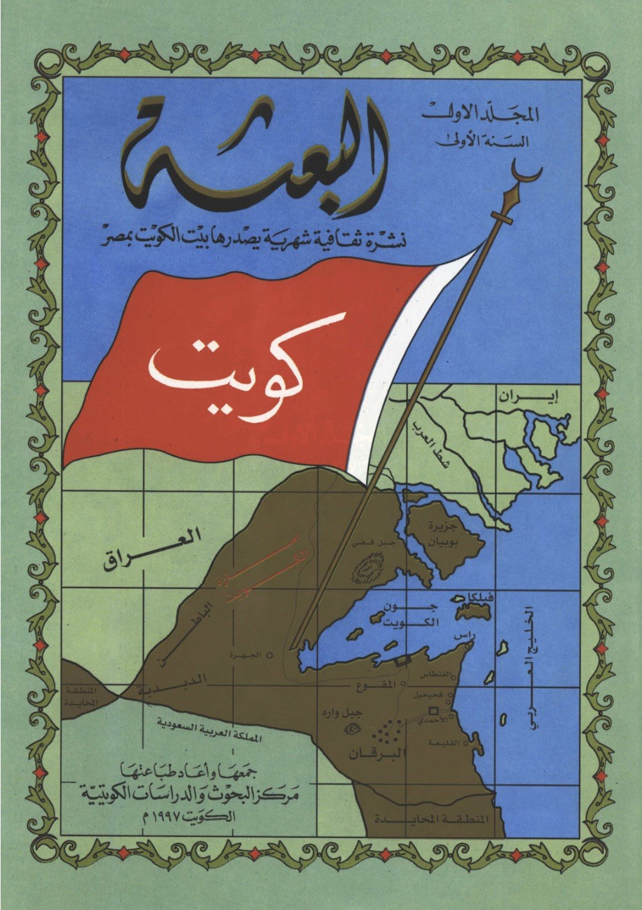
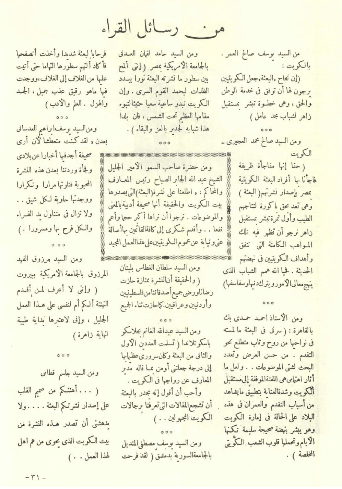
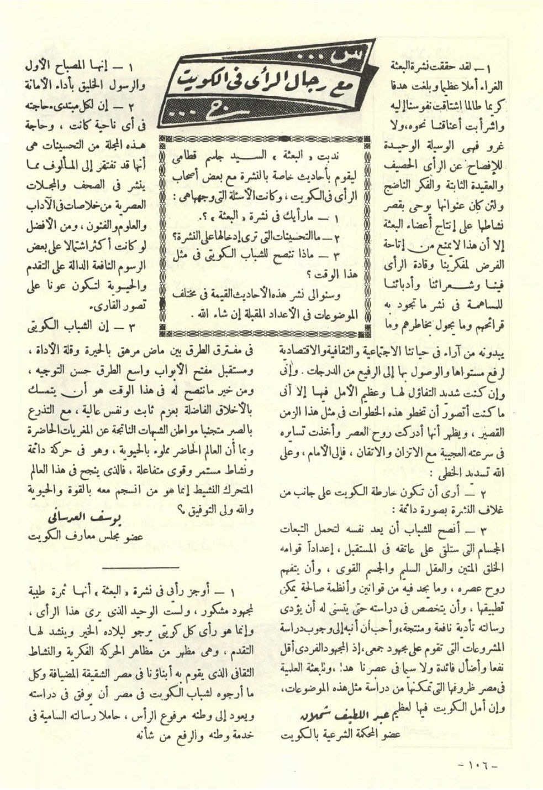
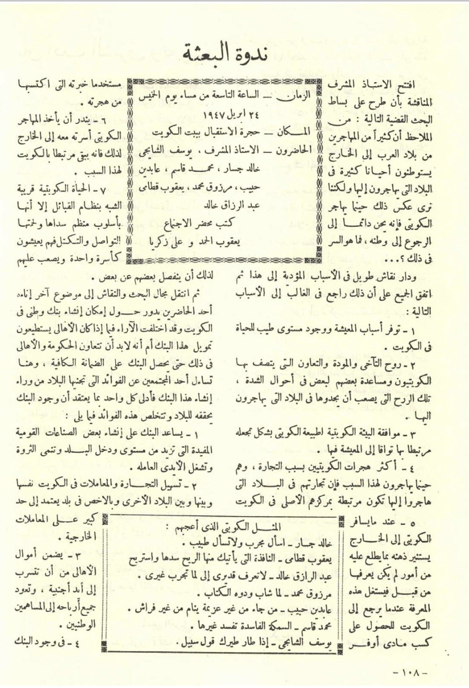
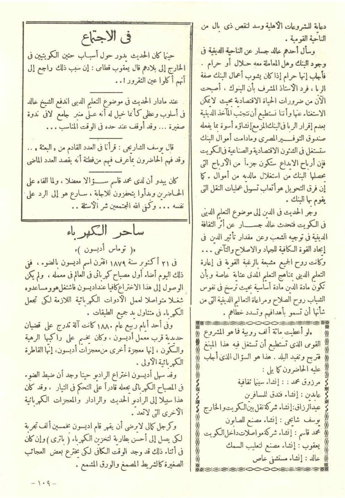
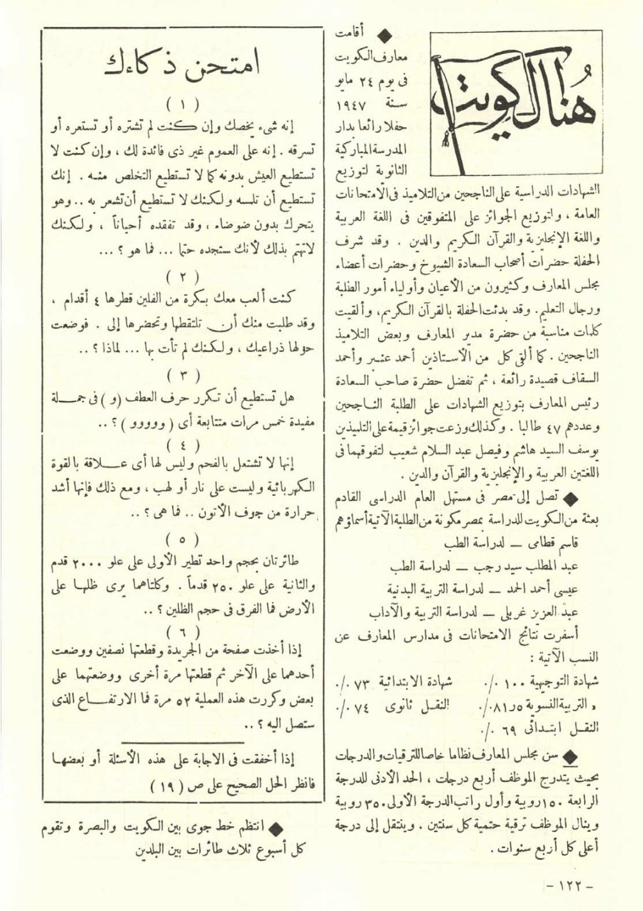
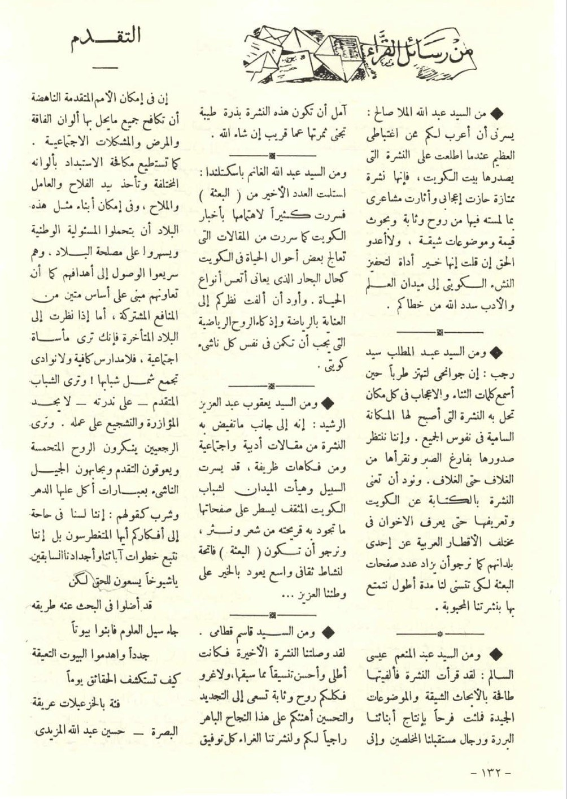
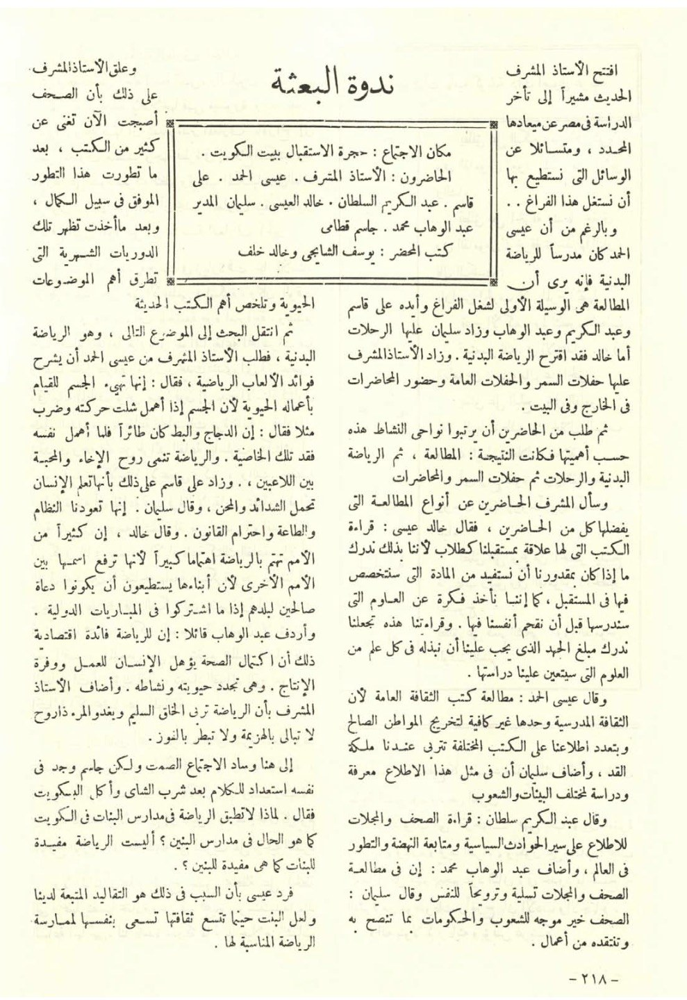
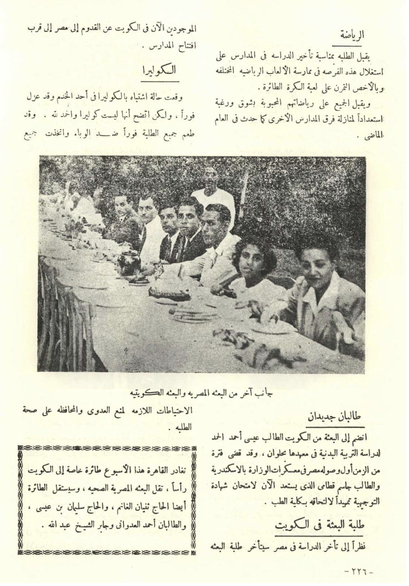
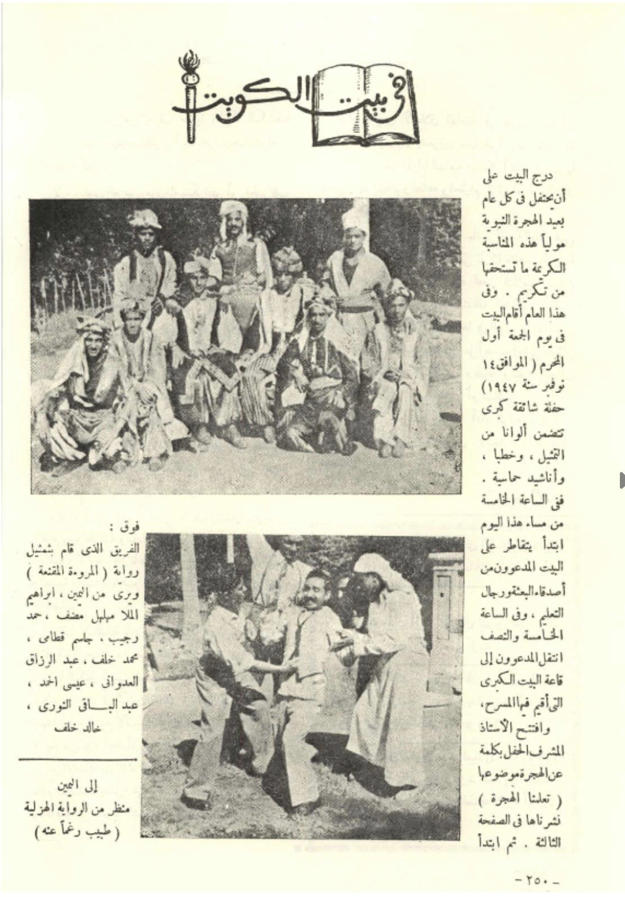

Volume 1, year 1 (1946 to 1947) · Pages from Al-Ba’tha, the monthly of Bait Al-Kuwait in Cairo, volume 1, year 1, collected and reprinted by the Center for Research and Kuwaiti Studies, 1997
Al-Ba’tha, volume 1: Jassim and Yacoub Al-Qatami among the Kuwaiti students in Cairo
What it is
The first year of Al-Ba’tha names two young men of the family among the Kuwaiti students. 1. Jassim Qatami writes to congratulate the paper (page 31), interviews Kuwait’s men of opinion for it (page 106), takes part in its seminar and asks why girls’ schools have no sport (page 218), prepares for the secondary certificate to enter the faculty of medicine (page 226), speaks at a seminar on public lectures (page 219), and acts in the play at the Hijra celebration of 14 November 1947 (page 250). 2. «Qasim Qatami», most likely a misprint for Jassim, wins the 100 metres, the 400 metres and the hurdles at the Education Department’s sports festival of 24 April 1947 (page 104), is listed among the students coming to Egypt to study medicine (page 122), and writes to the paper (page 132). 3. Yacoub Qatami speaks at the seminars of 24 April 1947 (pages 108 and 109) and of the students who visited Kuwait after two years away (pages 268 and 269), passes from the third to the fourth year (page 127), and in 1947 to 1948 studies at Farouk School (page 275), where «Qasim Qatami» is also listed.
Why it matters
Contemporary records of Jassim Abdulaziz Al-Qatami and Yacoub Yousef Al-Qatami as students of the Kuwaiti mission in Cairo in 1947.
Who is meant
Jassim Qatami is Jassim Abdulaziz Al-Qatami. «Qasim Qatami» is most likely the same Jassim misprinted, as the index of Al-Ba’tha also suggests: the medical studies match. Yacoub Qatami is Yacoub Yousef Al-Qatami, named in full elsewhere in Al-Ba’tha.
Page copies















Sources
Al-Ba’tha, volume 1, year 1, reprinted by the Center for Research and Kuwaiti Studies, Kuwait, 1997, pages 31, 104, 106, 108, 109, 122, 127, 132, 218, 219, 226, 250, 268, 269 and 275
How this text was made: Page 54 does not name the family. The index lists «Qasim Qatami» on pages 129 and 141, but those pages are by Qasim Mashari, so they are not shown.
Open in the interactive site